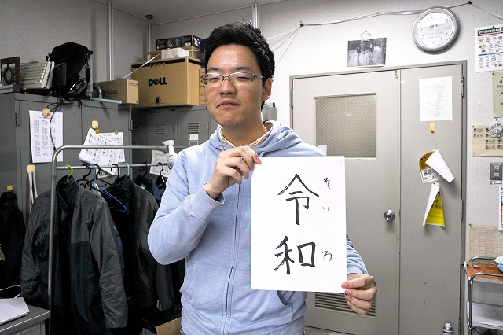
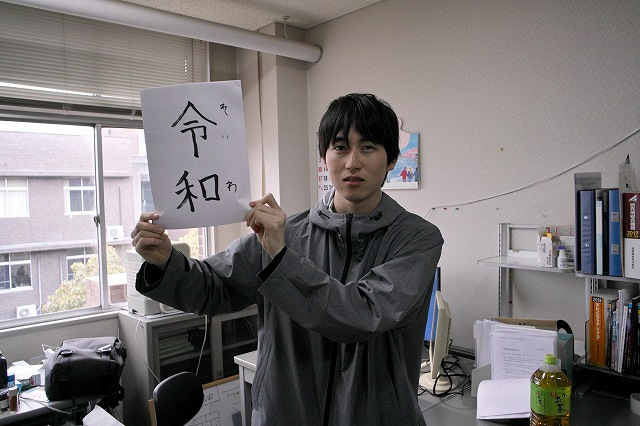
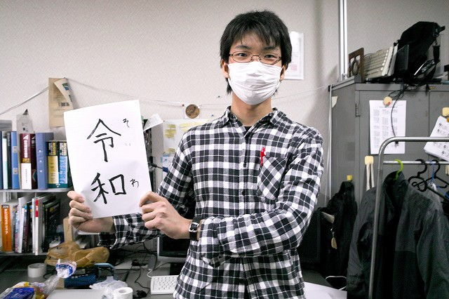
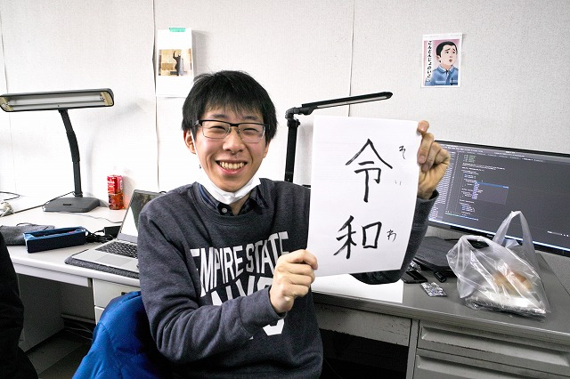
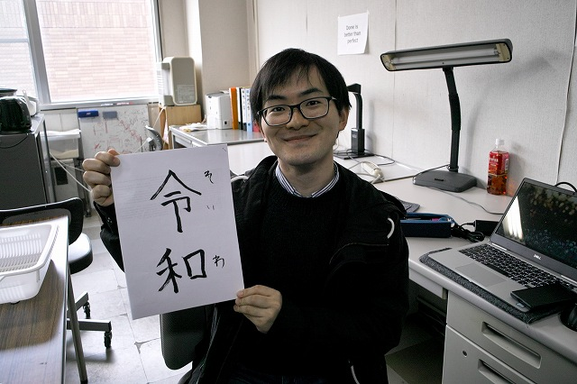
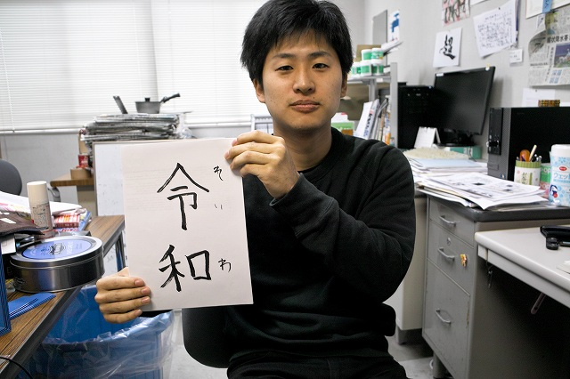
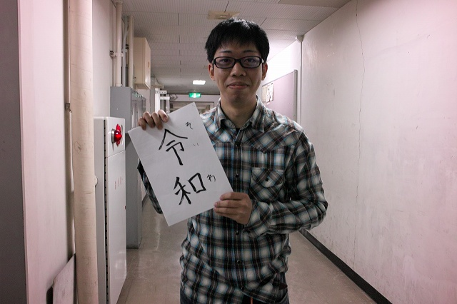

| ・ 令和 (H31.04.01) | |||
内閣告示が出ました。 総理大臣記者会見によると、”「初春の令月にして 気淑（よ）く風和（やわら）ぎ 梅は鏡前の粉（こ）を披（ひら）き 蘭（らん）は珮後（はいご）の香を薫（かおら）す」との文言から引用したものであります。そして、この「令和」には、人々が美しく心を寄せ合う中で文化が生まれ育つという意味が込められております。”、とのことです。 結構気に入りました（助教の人談 |
|||
|

持ち方どうやっけ？ |

Yahooで見たそうです | ||
|

下げ気味 |

対角線で | ||
|

逆対角線で |

利き腕関係あるの？ | ||
|

勝訴！って感じで |
|||